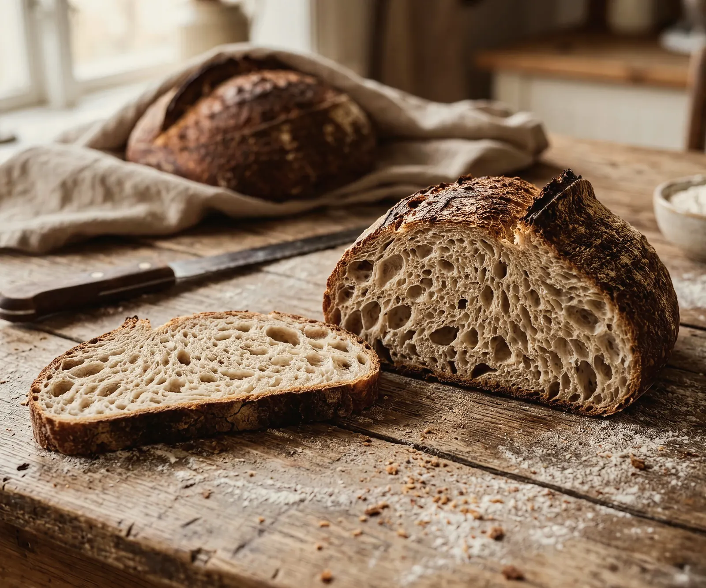

צילום מלא של המקום וכותרת בפינה. בצד השני תלוי שלט כמו על דלת של חנות: הוא נכנס בנדנוד, אומר אם פתוח עכשיו ועד מתי (לפי שעון ישראל), ובלחיצה מתהפך ומראה את שעות השבוע. מתחתיו כרטיס קטן עם כתובת, טלפון, הזמנה מראש וניווט.
מתי משתמשים: עסק שאנשים מגיעים אליו פיזית: מאפייה, בית קפה, מסעדה, חנות, מספרה, קליניקה, מוסך. מה ששואלים לפני הכול הוא "פתוח עכשיו?" ו"איפה זה?", וההירו עונה בלי לגלול לפוטר, עם רגע אחד שמרגיש כמו לעמוד מול הדלת. לא לעסק בלי כתובת שמקבלת לקוחות, ולא לעסק שעובד רק בתיאום, שם h16.
הדמו כאן עיצובי-ניטרלי בכוונה. כשהמהלך נכנס לפרויקט, מיובאת רק ההתנהגות: הצבעים, הרדיוסים, הפונטים והצללים יורשים את העיצוב של אותו פרויקט.

כיכרות, מאפים ועוגות שמרים משש וחצי בבוקר, ובשישי גם חלות. מזמינים מראש ואוספים בלי תור.
ראשון עד חמישי
7:00 עד 19:00, שישי עד 14:30
הקוד כאן עומד בפני עצמו. כל טוקן עיצוב נושא ברירת מחדל, מחלקות העזר של המאגר מוטמעות בו, ותגי הסקריפט מסודרים לפי הסדר הנכון. פרויקט שמגדיר --accent או --line משלו יורש אותם אוטומטית. הרכיב הזה מסתמך על dir="rtl".
/* H28 · הירו עסק מקומי: שלט פתוח שמתהפך לשעות */
@font-face{font-family:"MV Bellefair";src:url("https://liavwebdesign-spec.github.io/motion-vault/assets/fonts/bellefair.woff2") format("woff2");font-weight:400;font-display:swap;size-adjust:112%}
/* ---- demo frame and top row (scaffolding, not part of the hero) ---- */
.hf{position:relative;margin-inline:var(--gutter, clamp(24px, 5vw, 96px));border:1px solid var(--line, #e4e4ee);border-radius:var(--r, 14px);overflow:hidden;background:var(--bg, #f7f7fa);isolation:isolate}
.hf-top{position:absolute;inset-inline:0;top:0;z-index:6;display:flex;align-items:center;gap:24px;padding:20px 28px;font-size:15px;font-weight:500}
.hf-top b{font-size:18px;font-weight:800}
.hf-top nav{display:flex;gap:18px;margin-inline-start:auto;opacity:.8}
@media (max-width:760px){.hf-top nav{display:none}}
.hbtn{display:inline-flex;align-items:center;justify-content:center;min-height:52px;padding:0 28px;border-radius:12px;background:var(--accent, #4a3aff);color:var(--accent-ink, #fff);text-decoration:none;
font-size:16px;font-weight:600;white-space:nowrap;transition:transform .18s cubic-bezier(.2,.6,.2,1),box-shadow .3s cubic-bezier(.2,.6,.2,1)}
.hbtn.ghost{background:none;color:inherit;box-shadow:inset 0 0 0 1.5px currentColor}
@media (hover:hover) and (pointer:fine){.hbtn:hover{transform:translateY(-2px)}}
.hkick{font-size:14px;font-weight:600;letter-spacing:.02em;opacity:.75}
.hlead{margin:0;font-size:clamp(17px,1.2vw,20px);line-height:1.55;opacity:.82}
.hmicro{display:flex;flex-wrap:wrap;gap:8px 18px;font-size:14px;opacity:.7}
.hcta{display:flex;flex-wrap:wrap;gap:12px}
/* the resting state is the visible one. opacity:1 on .rv also keeps the no-JS look identical to the look after the entrance */
.rv{opacity:1;transition:opacity .5s cubic-bezier(.2,.6,.2,1),transform .5s cubic-bezier(.2,.6,.2,1)}
.open-anim .rv{opacity:0;transform:translateY(18px);animation:rv-fs 0s 2.5s forwards}
/* --t0: on a page with a header, 0.2s so the header comes down first (motion.md 2) */
.is-in .rv{opacity:1;transform:none;transition-duration:.7s;transition-delay:calc(var(--t0,0s) + var(--i,0) * 90ms)}
.rv-on .rv{animation:none}
@keyframes rv-fs{to{opacity:1;transform:none}}
@media (prefers-reduced-motion:reduce){.rv,.is-in .rv{transition-duration:.01ms!important;transition-delay:0s!important}
.hbtn{transition-duration:.01ms!important}.hbtn:hover{transform:none!important}}
.h28h{--disp:"MV Bellefair","Bellefair",Georgia,serif;position:relative;display:grid;grid-template-columns:minmax(0,1fr) auto;gap:40px;min-height:min(86vh,780px);padding:96px 28px 28px;background:var(--ink, #16182b);color:var(--bg, #f7f7fa);overflow:hidden;isolation:isolate}
.h28-bg{position:absolute;inset:0;z-index:-2}
.h28-bg img{width:100%;height:100%;object-fit:cover;object-position:55% 60%;display:block;transition:transform 1.2s cubic-bezier(.2,.6,.2,1)}
.open-anim .h28-bg img{transform:scale(1.06);animation:rv-fs 0s 2.5s forwards}
.is-in .h28-bg img{transform:none;transition-delay:var(--t0,0s)}
.rv-on .h28-bg img{animation:none}
/* the heading sits in the top corner, so the shade comes from that corner (heroes.md); the sign and the card have their own surface */
.h28-scrim{position:absolute;inset:0;z-index:-1;background:linear-gradient(to bottom left,color-mix(in srgb,var(--ink, #16182b) 72%,transparent) 0%,color-mix(in srgb,var(--ink, #16182b) 30%,transparent) 50%,transparent 80%)}
[dir="ltr"] .h28-scrim{background:linear-gradient(to bottom right,color-mix(in srgb,var(--ink, #16182b) 72%,transparent) 0%,color-mix(in srgb,var(--ink, #16182b) 30%,transparent) 50%,transparent 80%)}
.h28-txt{align-self:start;display:flex;flex-direction:column;align-items:flex-start;gap:20px;max-width:600px}
.h28h h3{margin:0;font-size:clamp(32px,min(4.2vw,7.8vh),64px);line-height:1.05;font-weight:700;letter-spacing:-.01em;text-wrap:balance}
.h28h .hlead{max-width:40ch;opacity:.92}
/* the other column: the sign hangs from a nail under the nav (the column starts higher, so no cord crosses the links), the card stands at the bottom */
.h28-side{--sw:272px;--ch:64px;--ph:172px;display:flex;flex-direction:column;justify-content:space-between;align-items:center;gap:32px;margin-top:-12px;width:340px}
.h28-sign{position:relative;width:var(--sw)}
.h28-pin{position:absolute;top:-4px;left:50%;z-index:2;width:12px;height:12px;margin-left:-6px;border-radius:50%;background:var(--bg, #f7f7fa);box-shadow:0 2px 6px color-mix(in srgb,var(--ink, #16182b) 60%,transparent)}
/* swings around the nail; perspective here so the plate under it turns in depth */
.h28-hang{transform-origin:50% 2px;perspective:900px}
.open-anim .h28-hang{opacity:0;rotate:-16deg;animation:h28h-fs 0s 2.5s forwards}
.rv-on .h28-hang{animation:none}
.is-in .h28-hang{animation:h28-in 1.2s cubic-bezier(.2,.6,.2,1) var(--t0,0s) both}
@keyframes h28h-fs{to{opacity:1;rotate:0deg}}
@keyframes h28-in{0%{opacity:0;rotate:-16deg}25%{opacity:1;rotate:8deg}50%{rotate:-3.5deg}74%{rotate:1.2deg}100%{opacity:1;rotate:0deg}}
/* the cords and both faces turn together on the nail, like a real sign twisting on its string */
.h28-turn{position:relative;height:calc(var(--ch) + var(--ph));transform-style:preserve-3d;rotate:y 0deg;transition:rotate .7s cubic-bezier(.2,.6,.2,1)}
.h28-turn.flip{rotate:y 180deg}
.h28-cord{position:absolute;inset:0 0 auto;width:100%;height:calc(var(--ch) + 12px);overflow:visible;translate:0 0 1px;pointer-events:none}
.h28-cord path{fill:none;stroke:var(--bg, #f7f7fa);stroke-width:1.5;stroke-linecap:round;vector-effect:non-scaling-stroke;opacity:.85}
.h28-face{position:absolute;inset:var(--ch) 0 0;display:flex;flex-direction:column;align-items:center;justify-content:center;gap:6px;padding:20px 20px 16px;border-radius:14px;
background:var(--bg, #f7f7fa);color:var(--ink, #16182b);backface-visibility:hidden;-webkit-backface-visibility:hidden;box-shadow:0 18px 40px -16px color-mix(in srgb,var(--ink, #16182b) 80%,transparent)}
.h28-bk{rotate:y 180deg;justify-content:flex-start;gap:10px}
/* the two holes the cord goes through, on both faces */
.h28-face::before,.h28-face::after{content:"";position:absolute;top:8px;width:7px;height:7px;border-radius:50%;background:color-mix(in srgb,var(--ink, #16182b) 30%,var(--bg, #f7f7fa))}
.h28-face::before{left:calc(15% - 3.5px)}.h28-face::after{right:calc(15% - 3.5px)}
.h28-st{display:flex;align-items:center;gap:10px;margin:0;font-size:18px;font-weight:700}
.h28-st i{width:12px;height:12px;border-radius:50%;background:var(--muted, #6a6d85);flex:none}
/* green means open everywhere; it is a status colour, not the brand, so it stays the same in every skin */
.h28-st.on i{background:hsl(145 63% 42%)}
.live .h28-st{font-family:var(--disp);font-size:52px;font-weight:400;line-height:1}
.h28-sm{margin:0;font-size:15px;color:var(--muted, #6a6d85);text-align:center}
.live .h28-sm{font-size:17px;color:var(--ink, #16182b);font-weight:600}
.h28-flip,.h28-back{display:inline-flex;align-items:center;gap:6px;min-height:36px;margin-top:4px;padding:0 12px;border:0;border-radius:999px;background:none;color:inherit;font:inherit;font-size:14px;font-weight:600;cursor:pointer}
.h28-flip[hidden],.h28-back[hidden]{display:none}
.h28-flip svg{width:14px;height:14px}
@media (hover:hover) and (pointer:fine){.h28-flip:hover,.h28-back:hover{background:color-mix(in srgb,var(--ink, #16182b) 8%,transparent)}}
.h28-flip:focus-visible,.h28-back:focus-visible{outline:2px solid var(--accent, #4a3aff);outline-offset:2px}
.h28-bk b{margin-top:8px;font-size:15px}
.h28-bk dl{display:grid;grid-template-columns:auto auto;gap:4px 16px;margin:0;font-size:14px}
.h28-bk dd{margin:0}
.h28-bk .now{font-weight:800}
.h28-card{display:flex;flex-direction:column;gap:14px;width:100%;padding:20px 24px;border-radius:20px;background:var(--bg, #f7f7fa);color:var(--ink, #16182b);
box-shadow:0 24px 60px -24px color-mix(in srgb,var(--ink, #16182b) 70%,transparent)}
.h28-name{margin:0;font-size:18px;font-weight:800}
.h28-dl{display:grid;grid-template-columns:auto 1fr;gap:8px 16px;margin:0;font-size:15px}
.h28-dl dt{color:var(--muted, #6a6d85)}
.h28-dl dd{margin:0;font-weight:600}
.h28-tel{color:inherit;text-decoration:none;unicode-bidi:isolate}
@media (hover:hover) and (pointer:fine){.h28-tel:hover{text-decoration:underline}}
.h28-btns{display:flex;gap:8px}
.h28-btns .hbtn{flex:1;padding-inline:16px}
.h28-btns .hbtn.ghost{color:var(--ink, #16182b)}
@media (prefers-reduced-motion:reduce){.h28-bg img,.h28-turn{transition-duration:.01ms!important;transition-delay:0s!important}}
/* phone: heading, then the sign in the flow (smaller, shorter cords), then the card across the full width */
@media (max-width:860px){.h28h{grid-template-columns:1fr;gap:20px;min-height:min(94vh,820px);padding:72px 20px 20px}
.h28h h3{font-size:clamp(28px,7.6vw,38px)}.h28-txt{gap:12px}
.h28-side{--sw:236px;--ch:40px;--ph:150px;margin-top:0;width:auto;gap:20px}
.live .h28-st{font-size:44px}.h28-face{padding:16px 16px 12px}.h28-bk{gap:6px}.h28-bk b{margin-top:4px}
.h28-card{padding:18px 20px;gap:12px}
.h28-scrim{background:linear-gradient(to bottom,color-mix(in srgb,var(--ink, #16182b) 75%,transparent) 0%,color-mix(in srgb,var(--ink, #16182b) 35%,transparent) 55%,color-mix(in srgb,var(--ink, #16182b) 20%,transparent))}}<script>if(matchMedia("(prefers-reduced-motion:no-preference)").matches)document.documentElement.classList.add("open-anim")</script>
<div class="hf"><div class="hf-top" style="color:var(--bg)"><b>לוגו</b><nav><span>שירותים</span><span>פרויקטים</span><span>אודות</span></nav></div>
<section class="h28h" id="h28">
<div class="h28-bg"><img src="https://liavwebdesign-spec.github.io/motion-vault/assets/media/real/s14/hero-bread.webp" alt="כיכר לחם שאור חצויה על שולחן עץ" fetchpriority="high" decoding="async"></div>
<span class="h28-scrim"></span>
<div class="h28-txt">
<span class="hkick rv">מאפיית שאור, זכרון יעקב</span>
<h3 class="rv">לחם שאור שיוצא מהתנור כל בוקר</h3>
<p class="hlead rv">כיכרות, מאפים ועוגות שמרים משש וחצי בבוקר, ובשישי גם חלות. מזמינים מראש ואוספים בלי תור.</p>
</div>
<div class="h28-side">
<div class="h28-sign">
<span class="h28-pin" aria-hidden="true"></span>
<div class="h28-hang">
<div class="h28-turn">
<div class="h28-face h28-fr">
<p class="h28-st"><i aria-hidden="true"></i><b class="h28-sb">ראשון עד חמישי</b></p>
<p class="h28-sm">7:00 עד 19:00, שישי עד 14:30</p>
<button class="h28-flip" type="button" hidden><svg viewBox="0 0 16 16" aria-hidden="true"><path d="M13.5 8a5.5 5.5 0 1 1-1.6-3.9M13.5 2.5v3h-3" fill="none" stroke="currentColor" stroke-width="1.6" stroke-linecap="round" stroke-linejoin="round"/></svg>שעות השבוע</button>
</div>
<div class="h28-face h28-bk" aria-hidden="true" inert>
<b>שעות פתיחה</b>
<dl><dt data-d="0">ראשון עד חמישי</dt><dd data-d="0">7:00 עד 19:00</dd><dt data-d="5">שישי</dt><dd data-d="5">6:30 עד 14:30</dd><dt data-d="6">שבת</dt><dd data-d="6">סגור</dd></dl>
<button class="h28-back" type="button" hidden>חזרה</button>
</div>
<svg class="h28-cord" viewBox="0 0 100 100" preserveAspectRatio="none" aria-hidden="true"><path d="M50 2 15 100M50 2 85 100"/></svg>
</div>
</div>
</div>
<div class="h28-card rv">
<p class="h28-name">המאפייה ברחוב הגפן</p>
<dl class="h28-dl">
<dt>כתובת</dt><dd>הגפן 12, זכרון יעקב</dd>
<dt>טלפון</dt><dd><a class="h28-tel" href="tel:+97246290000" dir="ltr">04-629-0000</a></dd>
</dl>
<div class="h28-btns"><a class="hbtn" href="#h28">להזמנה מראש</a><a class="hbtn ghost" href="#h28">ניווט</a></div>
</div>
</div>
</section>
</div>// in view = fire. Measured directly on scroll and resize, not through IntersectionObserver:
// an observer does not update while the tab is throttled (and on a real site the hero is usually
// on screen at load anyway), and an entrance that never fires leaves the hero invisible.
function inView(el,f){
var ro;
function chk(){
var r=el.getBoundingClientRect();
if(r.top<innerHeight*.9&&r.bottom>0){off();f();}
}
function off(){removeEventListener("scroll",chk);removeEventListener("resize",chk);if(ro)ro.disconnect();}
addEventListener("scroll",chk,{passive:true}); addEventListener("resize",chk);
// a layout change with no scroll (a bar above it closes, a font swaps in) can also bring it into view
if(window.ResizeObserver){ro=new ResizeObserver(chk);ro.observe(document.body);}
requestAnimationFrame(chk); setTimeout(chk,300);
}
function enter(root){
var els=root.querySelectorAll(".rv");
els.forEach(function(el,i){if(!el.style.getPropertyValue("--i"))el.style.setProperty("--i",i);});
// a script that ran late, after the 2.5s CSS failsafe already showed the hero: keep it shown, no second entrance
if(els.length&&getComputedStyle(els[0]).opacity==="1")root.classList.add("is-in");
root.classList.add("rv-on");
inView(root,function(){root.classList.add("is-in");});
}
(function(){
var root=document.getElementById("h28"); enter(root);
var sign=root.querySelector(".h28-sign"), hang=root.querySelector(".h28-hang"), turn=root.querySelector(".h28-turn");
var fr=root.querySelector(".h28-fr"), bk=root.querySelector(".h28-bk"), bf=root.querySelector(".h28-flip"), bb=root.querySelector(".h28-back");
var st=root.querySelector(".h28-st"), sb=root.querySelector(".h28-sb"), sm=root.querySelector(".h28-sm");
var DAYS=["ראשון","שני","שלישי","רביעי","חמישי","שישי","שבת"], WD={Sun:0,Mon:1,Tue:2,Wed:3,Thu:4,Fri:5,Sat:6};
// minutes from midnight by weekday (Sunday is 0), null is closed. In a project this comes from the business details in the panel
var HOURS=[[420,1140],[420,1140],[420,1140],[420,1140],[420,1140],[390,870],null];
function hm(m){return Math.floor(m/60)+":"+String(m%60).padStart(2,"0");}
// the business's clock, not the visitor's: a tourist abroad still sees whether the bakery is open now
function now(){
var o={};
new Intl.DateTimeFormat("en-US",{timeZone:"Asia/Jerusalem",weekday:"short",hour:"numeric",minute:"numeric",hourCycle:"h23"}).formatToParts(new Date()).forEach(function(p){o[p.type]=p.value;});
return {d:WD[o.weekday],m:(+o.hour%24)*60+(+o.minute)};
}
function render(){
var n=now(), t=HOURS[n.d], open=!!t&&n.m>=t[0]&&n.m<t[1], tail="";
if(open)tail="עד "+hm(t[1]);
else if(t&&n.m<t[0])tail="נפתח היום ב-"+hm(t[0]);
else for(var i=1;i<=7;i++){var d=(n.d+i)%7;if(HOURS[d]){tail="נפתח "+(i===1?"מחר":"ביום "+DAYS[d])+" ב-"+hm(HOURS[d][0]);break;}}
st.classList.toggle("on",open); sb.textContent=open?"פתוח":"סגור"; sm.textContent=tail;
// today's row on the back is bold (Sunday to Thursday share one row)
var row=n.d<5?0:n.d;
bk.querySelectorAll("[data-d]").forEach(function(e){e.classList.toggle("now",+e.dataset.d===row);});
}
sign.classList.add("live"); bf.hidden=false; bb.hidden=false;
render(); setInterval(render,60000);
// only the face you see is reachable: the other one is inert and hidden from screen readers, and focus moves with the turn
function flip(on){
turn.classList.toggle("flip",on);
fr.inert=on; bk.inert=!on;
fr.setAttribute("aria-hidden",on?"true":"false"); bk.setAttribute("aria-hidden",on?"false":"true");
(on?bb:bf).focus({preventScroll:true});
}
bf.addEventListener("click",function(){flip(true);});
bb.addEventListener("click",function(){flip(false);});
// a small push when the pointer reaches the sign, once the entrance is over; a running push is not restarted
if(!matchMedia("(hover:hover) and (pointer:fine)").matches||matchMedia("(prefers-reduced-motion: reduce)").matches||!hang.animate)return;
var ready=false, push=null, ez="cubic-bezier(.2,.6,.2,1)";
setTimeout(function(){ready=true;},1600);
sign.addEventListener("pointerenter",function(){
if(!ready||(push&&push.playState==="running"))return;
push=hang.animate([{rotate:"0deg",easing:ez},{rotate:"2.5deg",easing:ez},{rotate:"-1.2deg",easing:ez},{rotate:".4deg",easing:ez},{rotate:"0deg"}],{duration:900});
});
})();